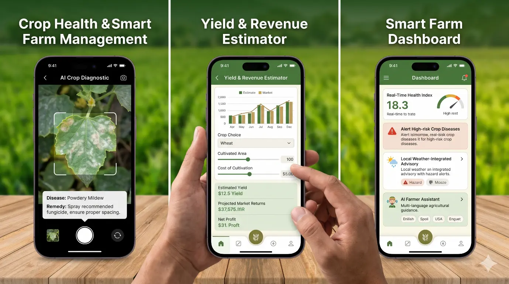

Empowering farmers with an intelligent, AI-driven digital platform that transforms conventional crop monitoring into data-driven farm management. Our mobile application integrates Artificial Intelligence (AI), Machine Learning (ML), image processing, and predictive analytics to deliver real-time crop health diagnostics, disease identification, pest detection, and scientifically informed remedial recommendations.
Image-based identification of crop diseases, pest infestations, and visible plant health abnormalities.
Crop-specific treatment suggestions and preventive management practices.
Early identification of potential crop health risks to minimise production losses.
Estimates cultivation costs, gross income, net profit, and return on investment (ROI) for different crops.
Location-specific weather forecasts and hazard alerts to optimise agricultural operations.
Interactive agricultural guidance and decision support in farmers' preferred languages.

"To develop an integrated digital farming ecosystem that combines crop health intelligence with financial forecasting, enabling farmers to transition towards precision agriculture, optimise input investments, minimise production risks, and maximise farm profitability through informed, technology-driven decisions."